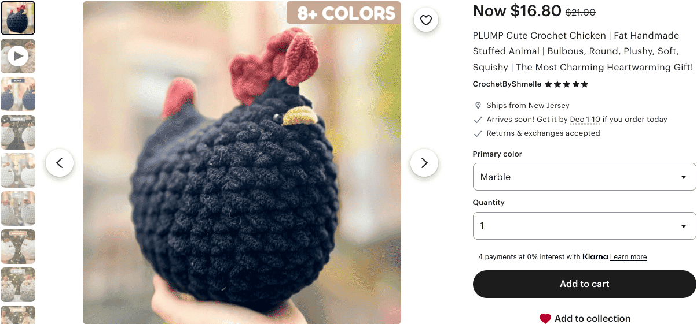
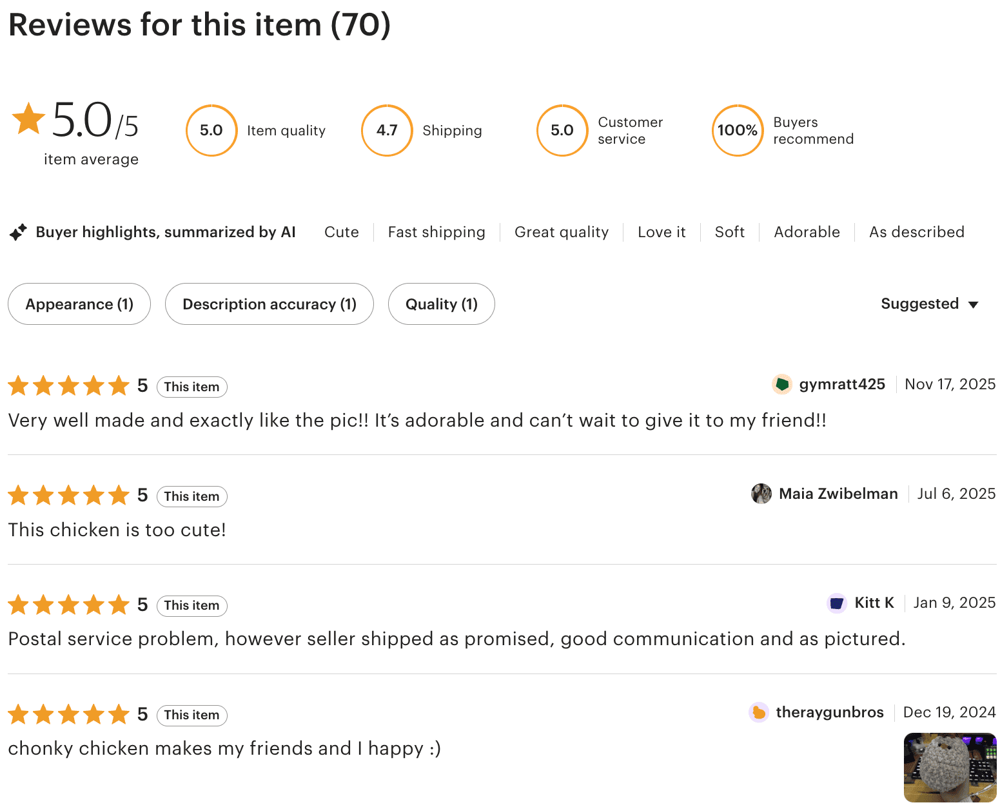
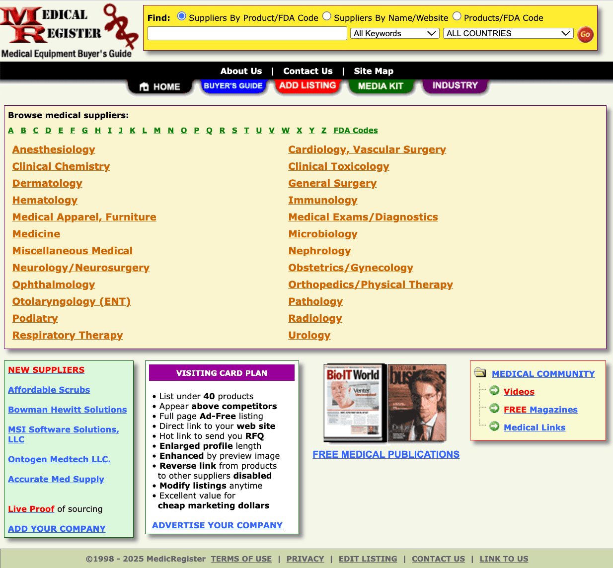
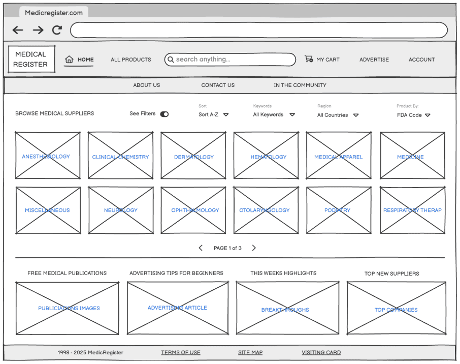
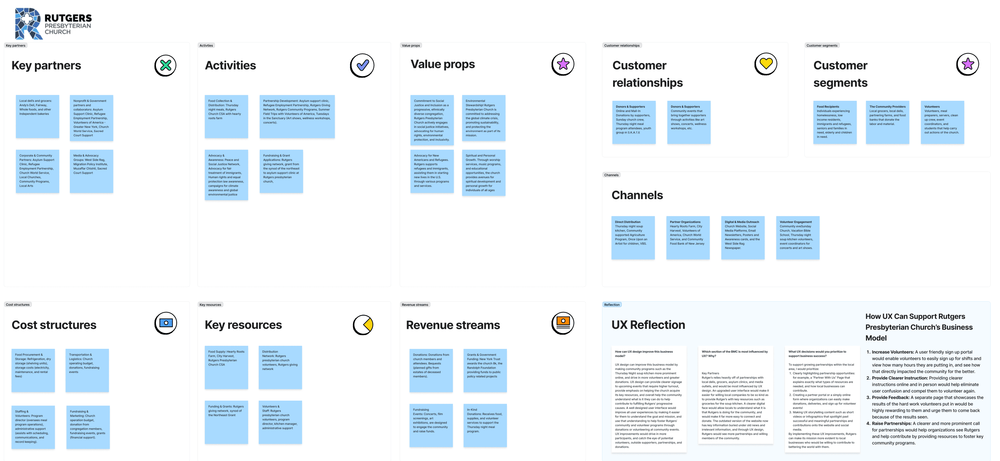
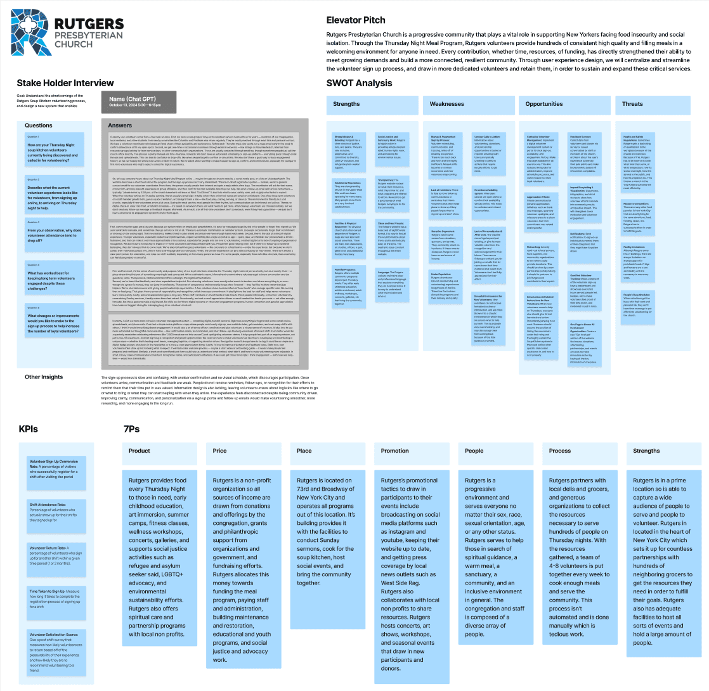
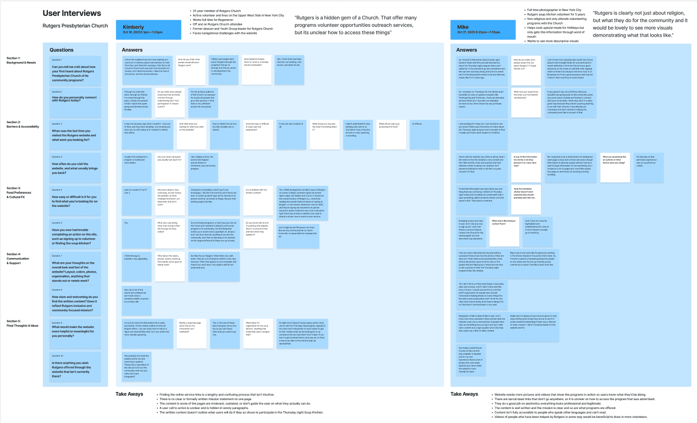
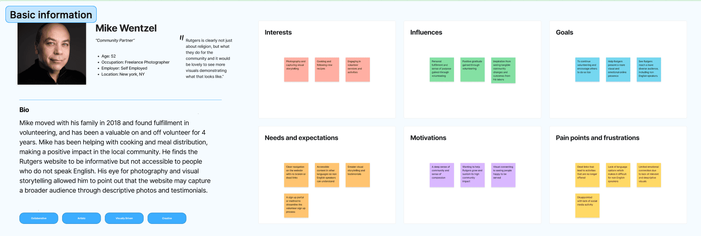
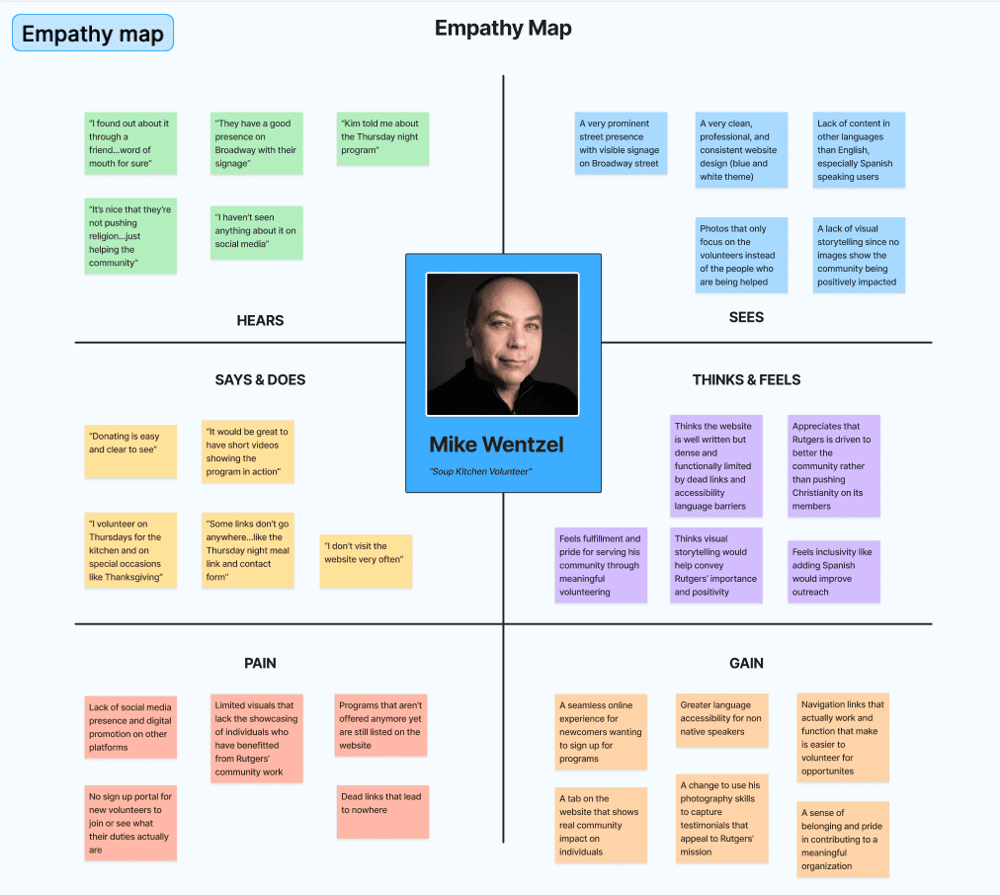

BUSINESS OWNER
CrochetByShmelle
After learning how to crochet in the summer of 2023, I launched an Etsy shop to share my handmade crochet creations with the world. Having an Etsy shop had me singlehandedly managing all business and design operations. After 2 years of learning to prototype original products, photograph compelling images, craft always with high attention to detail, and listen and answer all customer needs, I achieved continuous shop success.
Skills I Developed:
- Problem Solving: I listened to user pain-points, identified the root causes, and resolved issues by refining my designs and tweaking production methods
- Consistency & Reliability: I maintained production pace, made regular shop updates, and upheld high quality outputs
- Marketing: I wrote compelling product descriptions, creating promotional content and understood how to engage audiences
- Customer service skills: I communicated clearly and warmly to answer questions, resolve issues, and build trust
- Time Management: balanced hours of production with hours of schoolwork through high focus and discipline
Final Thoughts:
My dedication to quality and understanding what users desire developed me as a designer, and helped me achieve Etsy's Star Seller badge which recognizes me for my reliable service, thoughtful communication, and quality craftsmanship. I'm excited to continue in balancing my time to my education and crochet to perform my passion and understand the world of digital and product design.
CASE STUDY #1
MedicRegister: Redesigning a Decades-Old Website
MedicRegister.com is an online platform where individuals who seek medical resources can browse and buy from 45,000 listings of worldwide products and services.
Current MedicRegister.com Homepage
Pain-points:
Users felt overwhelmingly frustrated because the homepage was visually cluttered, had loud colors that competed for attention, and displayed too much information at once without adequate organization. The combination of poor signifiers, misleading tab names, and inconsistent navigation made experiences quite frustrating and made users prone to misclicks and backtracking. Overall, MedicRegister's outdated interface caused big issues like cognitive overload, making simple tasks tricky from distractions.
My Proposals:
Visual noise made experiences frustrating and was fixed through the elimination of excessive colors, cutting back on volume of on-screen content, and removal of ambiguous and inaccurate page names that worked against user comprehension.
Wireframe of Improved MedicRegister Homepage via Balsamiq
What I Took Out:
The visual noise made experiences frustrating, so I resolved this issue by eliminating excessive colors, cutting back on the volume of on-screen content, and removing inaccurate page names that worked against user comprehension.
What I Introduced:
I adopted a clearer structural format that takes after common modern interfaces to give users a sense of familiarity while navigating. I also implemented an always visable top and bottom navigation bar to allow users to understand where they are and access other pages from any page they're on. Additionally, I grouped the miscellaneous information into more logical categories with consistent formatting for better clarity. This successfully separated the previous dense mixtures of text, bringing a sense of professionalism to the site that was lacking before.
Furthermore, the addition of scrollable sections brings in visual hierarchy which reduces the amount of clutter on the screen by prioritizing the most relevant. Lastly, I renamed misleading tab titles to something that accurately describes the content, so users instantly understand each page's purpose with correctness. These kinds of changes alleviate much mental fatigue that came from daunting processes of cutting through information piles.
CASE STUDY #2
Rutgers Presbyterian Church: User Research on Streamlining Digital Processes to Encourage Volunteer Turnout
Rutgers Presbyterian Church is a progressive Church that supports thousands of New Yorkers facing food insecurity, financial instability, and social challenges through providing a generous array of volunteer led programs.
Although Rutgers has a flourishing physical presence and adequate online presence, its disjointed and unmodernized sign-up process frustrates potential volunteers and puts major strains on program attendance.
Conducting Business Model Research
Step 1: Analyzing the Business on Figmajam
To start my investigation into uncovering the website's biggest shortcomings, I conducted heavy research on Rutgers's business model. Some of the most revealing topics I looked into include identifying key partners, customer relationships, and key resources that are the backbone to Rutgers' ability to offer generous programs.
This information enabled me to draft a UX reflection that outlines UI improvements will support Rutgers' by helping them:
- Increase Volunteers
- Provide Clear Instruction to Users
- Obtain User Feedback
- Raise Partnerships
Conducting a Stakeholder Interview
Step 2: Understanding the User with Stakeholder Interviews on Figmajam
Since there was no available stakeholder at this time, I primed AI and prompted it to act as one of Rutgers' program directors to help me understand the volunteer process. The results from this conversation disclosed some problematic practices such as:
- A fragmented and manual sign-up process which relies on email threads
- Unclear calls to action due to key information about volunteering and partnership opportunities being buried in irrelevant information.
- Lack of reminders and minimal follow-up, which causes many volunteers to miss their shift entirely.
- No online volunteer portal showcasing open shifts and availability, leading to confusion and missed opportunities
- Lack of recognition and personal thank-yous to volunteers to motivate them to return
Since Rutgers is so donation dependant, success directly correlates to the amount of people and partnerships on hand. It is critical that Rutgers makes online experiences as easy and seamless to take advantage of every opportunity at hand.
Conducting User Interviews
Step 3: Understanding the User with User Interviews on Figmajam
Next, I conducted user interviews on two real Rutgers volunteers, Kim Hodges and Mike Wentzel. Kim has attended Rutgers Church for 25 years and is well-versed with the Rutges website. Both Kim and Mike have been volunteers at the weekly soup kitchen for more than 5 years and share similar complaints about the sign-up process, pointing out major contributors to the cause of poor turnout. Common frustrations that contribute to the lack of volunteers include the:
- Back and forth email-based registration process
- Undetailed pages lacking descriptions of the whereabouts and responsibilities of the soup kitchen
- Vague images that barely illustrate what it is like on the job
- Lack of recognition for hard-working volunteers
- Lack of testimonials reflecting the positive impact Rutgers programs have made on both volunteers and program attendees, which would incentivize both grouos to return
Conducting User Empathy Maps
 Step 4: Understanding the User with User Interviews on Figmajam
Creating a user empathy map after conducting stakeholder interviews and user interviews is important because it transforms raw research into more clear, human-centered insights. Tracking Mike's pains and gains, and other experiences, helps visualize what other users might similarly deal with while navigating the website. By fully understanding a user's perspective, I can then accurately identify frustrations, uncover hidden motives, and find opportunities for improvement. Ultimately, empathy maps act as the bridge between research and design.
Takeaways
Through this research, I identified clear opportunities for Rutgers to strengthen its volunteer engagement by modernizing and simplifying its digital processes. By providing clearer program information, improving visual storytelling, streamlining communication flows, and implementing a dedicated volunteer portal, Rutgers can create a more intuitive and motivating experience for current and potential volunteers. These UX improvements directly address the frustrations uncovered during interviews and empathy mapping, ultimately helping Rutgers increase volunteer turnout, strengthen community relationships, and better serve thousands of New Yorkers.